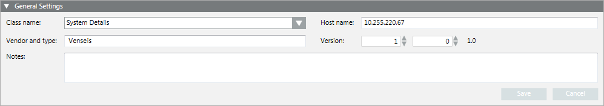
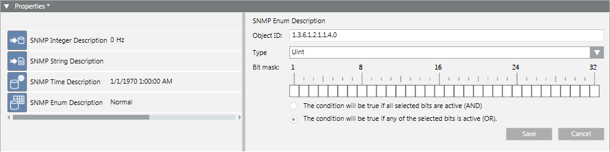
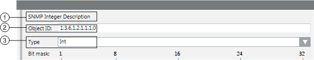
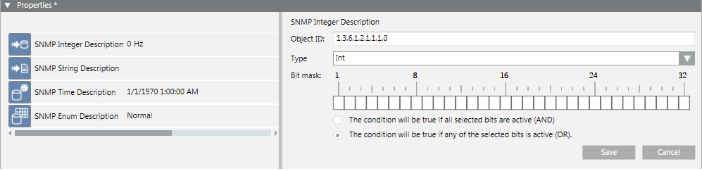
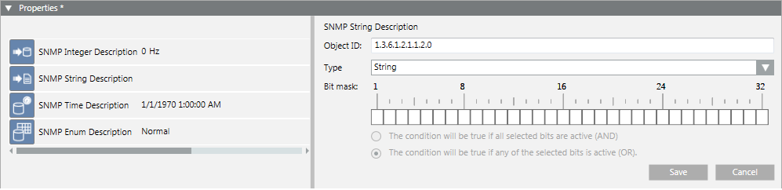
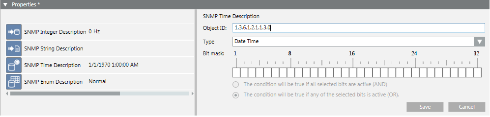
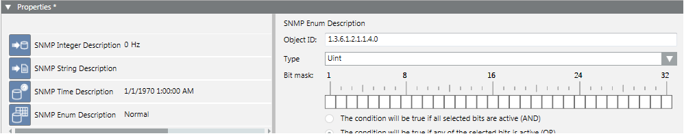

SNMP Device Configuration Workspace
To manually configure SNMP monitoring of a device or property, you must complete the fields in the General Settings and Properties expanders.
General Settings of an SNMP Device

Class name
Indicates the class of information provided by the SNMP device. This data is used in the device export name.
Host name
Indicates the name or IP address of the SNMP device. A message box informs you if the hostname is missing and you cannot save.
Vendor and type
Indicates the device vendor and device type. This data is used in the device export name.
Version
Indicates the version of the SNMP device (not the SNMP version). This data is used in the device export name.
Notes
Optional field where you can enter additional information.
Properties of an SNMP Device
This expander lists the SNMP points of the device. (These points correspond to the Data Point Elements (DPEs) of the object model that have the DL0 option set.)

Object ID
To read the SNMP Object ID, use a MIB browser software (see ).
IMPORTANT: Most of the MIB browsers provide an ID having a “.” (dot) at the beginning of the ID and not ending with “.0” (dot zero). For example, .1.3.6.1.2.1.1.1
To read the SNMP information correctly the SNMP OID written in Desigo CC does not need the “.” (dot) at the beginning but “.0” (dot zero) is needed at the end of the ID (the .0 part of the SNMP OID is frequently omitted by the MIB browsers. Example of correct OID: 1.3.6.1.2.1.1.1.0
Type
Variable type for the SNMP OID associated to this property. This value can also be retrieved using the MIB browser software.
NOTE: The variable type defined here must be the same as or at least compatible with the data type defined in the Object Model for the related DPE. Compatible means that it can be a subset of information or still readable using a different variable type. For a list of compatible variable types, see SNMP Data Types Relationship.
Example 1: SNMP type is Integer and the DPE type is Uint (if the SNMP point takes positive values, only this will work).
Example 2: SNMP type is Integer and the DPE type is String (if SNMP point takes numeric values, only this will work).
Bit Mask
Optional setting that allows verifying some specific bits and activating the event if the defined bitmask matches with the mask received for the SNMP point value.
Examples of SNMP Points Configuration
The following shows some examples of different SNMP points and data types configured in the project.
Legend

| Description |
1 | SNMP point selected in the list on the left. |
2 | SNMP OID associated to the point (DPE). |
3 | Variable type used to read the SNMP point value. |
Example of Integer Variable

Example of String Variable

Example of Time Variable

Example of Enumeration (or Unsigned Integer) Variable
